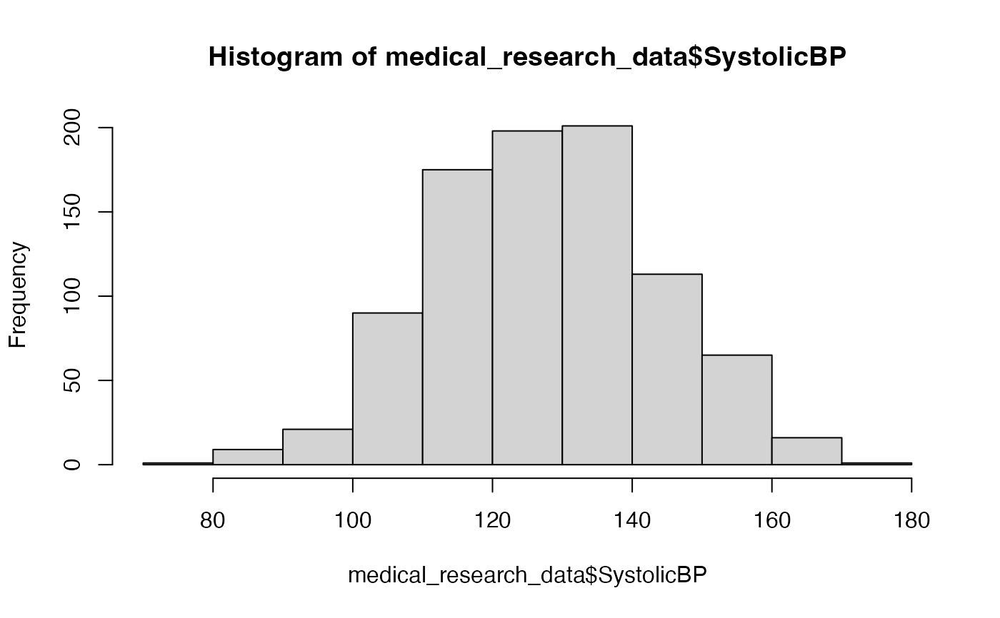

A comprehensive simulated dataset for general medical research, including patient demographics, visit information, clinical measurements, lab results, and various health scores. This dataset is structured to represent data collected over multiple visits for some patients.
Usage
data(medical_research_data)Format
A data frame with 890 rows and 32 variables:
- PatientID
Character. Unique patient identifier.
- VisitNumber
Integer. The sequential number of the patient's visit.
- VisitDate
Character. Date of the visit. Should ideally be parsed as Date.
- StudyCenter
Character. Identifier for the study center or hospital.
- AgeGroup
Character. Categorized age group of the patient.
- Gender
Character. Gender of the patient.
- TreatmentGroup
Character. Assigned treatment group (e.g., "Treatment A", "Control").
- DiagnosisPrimary
Character. Primary diagnosis for the patient.
- DiseaseStage
Character. Stage of the primary disease.
- ComorbidityCount
Integer. Number of comorbidities.
- BMICategory
Character. Body Mass Index category (e.g., "Underweight", "Normal", "Overweight").
- SystolicBP
Integer. Systolic blood pressure (mmHg).
- DiastolicBP
Integer. Diastolic blood pressure (mmHg).
- HeartRate
Integer. Heart rate (beats per minute).
- Temperature
Numeric. Body temperature (e.g., Celsius or Fahrenheit).
- RespiratoryRate
Integer. Respiratory rate (breaths per minute).
- OxygenSaturation
Integer. Oxygen saturation (SpO2, percent).
- HbA1c
Numeric. Glycated hemoglobin level (%).
- Creatinine
Numeric. Creatinine level (e.g., mg/dL or µmol/L).
- eGFR
Integer. Estimated Glomerular Filtration Rate.
- Hemoglobin
Numeric. Hemoglobin level (e.g., g/dL).
- WBC
Numeric. White Blood Cell count (e.g., cells/µL).
- Platelets
Integer. Platelet count (e.g., cells/µL).
- TotalCholesterol
Integer. Total cholesterol level (e.g., mg/dL).
- LDLCholesterol
Integer. LDL (low-density lipoprotein) cholesterol level.
- HDLCholesterol
Integer. HDL (high-density lipoprotein) cholesterol level.
- Triglycerides
Integer. Triglycerides level.
- PainScore
Integer. Patient-reported pain score (e.g., 0-10 scale).
- QualityOfLife
Integer. Quality of Life score from a standardized questionnaire.
- FunctionalStatus
Integer. Functional status score.
- MedicationAdherence
Integer. Medication adherence score or percentage.
- ClinicalScore
Integer. A composite or overall clinical score.
Examples
data(medical_research_data)
str(medical_research_data)
#> 'data.frame': 890 obs. of 32 variables:
#> $ PatientID : chr "PT001" "PT001" "PT001" "PT002" ...
#> $ VisitNumber : int 1 2 3 1 2 3 1 2 3 4 ...
#> $ VisitDate : chr "2022-01-01" "2022-02-09" "2022-04-12" "2022-01-01" ...
#> $ StudyCenter : chr "Boston Medical Center" "Boston Medical Center" "Boston Medical Center" "Johns Hopkins" ...
#> $ AgeGroup : chr "46-60" "46-60" "46-60" "46-60" ...
#> $ Gender : chr "Male" "Male" "Male" "Female" ...
#> $ TreatmentGroup : chr "Treatment A" "Treatment A" "Treatment A" "Treatment A+B" ...
#> $ DiagnosisPrimary : chr "Diabetes Type 2" "Diabetes Type 2" "Diabetes Type 2" "Diabetes Type 2" ...
#> $ DiseaseStage : chr "Stage II" "Stage II" "Stage II" "Stage II" ...
#> $ ComorbidityCount : int 3 3 3 3 3 3 2 2 2 2 ...
#> $ BMICategory : chr "Normal" "Normal" "Normal" "Overweight" ...
#> $ SystolicBP : int 142 141 143 120 118 125 139 145 124 133 ...
#> $ DiastolicBP : int 111 103 111 96 94 94 101 109 89 106 ...
#> $ HeartRate : int 84 66 55 76 88 72 83 101 66 71 ...
#> $ Temperature : num 36.6 37.9 36.7 36.8 37.5 36.7 36 36.5 36.8 36.8 ...
#> $ RespiratoryRate : int 16 11 16 15 18 27 12 20 14 17 ...
#> $ OxygenSaturation : int 98 98 94 98 100 98 100 96 96 98 ...
#> $ HbA1c : num NA 9.4 9 6.7 9.1 10.4 10.3 5.9 8.8 NA ...
#> $ Creatinine : num 0.74 0.6 0.46 0.73 1.43 1.08 1.08 0.63 0.97 NA ...
#> $ eGFR : int 89 85 92 89 80 81 84 NA 94 87 ...
#> $ Hemoglobin : num 14.1 11.5 NA 10.6 13.2 13.6 12.8 NA 14.2 13.8 ...
#> $ WBC : num NA 10 9.1 7.5 5.7 NA NA NA 3.9 4.2 ...
#> $ Platelets : int 238 225 295 254 297 181 186 141 NA 249 ...
#> $ TotalCholesterol : int 130 NA 165 236 216 198 146 216 154 192 ...
#> $ LDLCholesterol : int 95 136 132 145 136 NA 113 148 146 84 ...
#> $ HDLCholesterol : int 41 62 50 36 64 NA 50 41 48 58 ...
#> $ Triglycerides : int 148 117 53 226 104 108 103 163 199 NA ...
#> $ PainScore : int NA NA 1 4 7 2 4 4 3 NA ...
#> $ QualityOfLife : int 41 58 75 53 64 51 65 61 68 87 ...
#> $ FunctionalStatus : int 91 97 69 63 74 76 45 100 49 87 ...
#> $ MedicationAdherence: int 88 100 97 100 87 88 73 100 69 60 ...
#> $ ClinicalScore : int 59 55 70 50 46 67 47 40 67 46 ...
head(medical_research_data)
#> PatientID VisitNumber VisitDate StudyCenter AgeGroup Gender
#> 1 PT001 1 2022-01-01 Boston Medical Center 46-60 Male
#> 2 PT001 2 2022-02-09 Boston Medical Center 46-60 Male
#> 3 PT001 3 2022-04-12 Boston Medical Center 46-60 Male
#> 4 PT002 1 2022-01-01 Johns Hopkins 46-60 Female
#> 5 PT002 2 2022-04-18 Johns Hopkins 46-60 Female
#> 6 PT002 3 2022-05-30 Johns Hopkins 46-60 Female
#> TreatmentGroup DiagnosisPrimary DiseaseStage ComorbidityCount BMICategory
#> 1 Treatment A Diabetes Type 2 Stage II 3 Normal
#> 2 Treatment A Diabetes Type 2 Stage II 3 Normal
#> 3 Treatment A Diabetes Type 2 Stage II 3 Normal
#> 4 Treatment A+B Diabetes Type 2 Stage II 3 Overweight
#> 5 Treatment A+B Diabetes Type 2 Stage II 3 Overweight
#> 6 Treatment A+B Diabetes Type 2 Stage II 3 Overweight
#> SystolicBP DiastolicBP HeartRate Temperature RespiratoryRate OxygenSaturation
#> 1 142 111 84 36.6 16 98
#> 2 141 103 66 37.9 11 98
#> 3 143 111 55 36.7 16 94
#> 4 120 96 76 36.8 15 98
#> 5 118 94 88 37.5 18 100
#> 6 125 94 72 36.7 27 98
#> HbA1c Creatinine eGFR Hemoglobin WBC Platelets TotalCholesterol
#> 1 NA 0.74 89 14.1 NA 238 130
#> 2 9.4 0.60 85 11.5 10.0 225 NA
#> 3 9.0 0.46 92 NA 9.1 295 165
#> 4 6.7 0.73 89 10.6 7.5 254 236
#> 5 9.1 1.43 80 13.2 5.7 297 216
#> 6 10.4 1.08 81 13.6 NA 181 198
#> LDLCholesterol HDLCholesterol Triglycerides PainScore QualityOfLife
#> 1 95 41 148 NA 41
#> 2 136 62 117 NA 58
#> 3 132 50 53 1 75
#> 4 145 36 226 4 53
#> 5 136 64 104 7 64
#> 6 NA NA 108 2 51
#> FunctionalStatus MedicationAdherence ClinicalScore
#> 1 91 88 59
#> 2 97 100 55
#> 3 69 97 70
#> 4 63 100 50
#> 5 74 87 46
#> 6 76 88 67
summary(medical_research_data$AgeGroup) # Example, assuming Age is present, use AgeGroup
#> Length Class Mode
#> 890 character character
hist(medical_research_data$SystolicBP)
